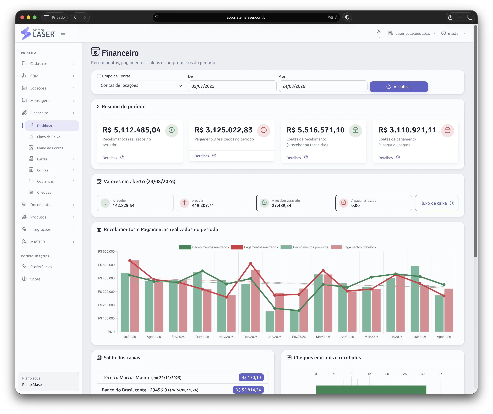
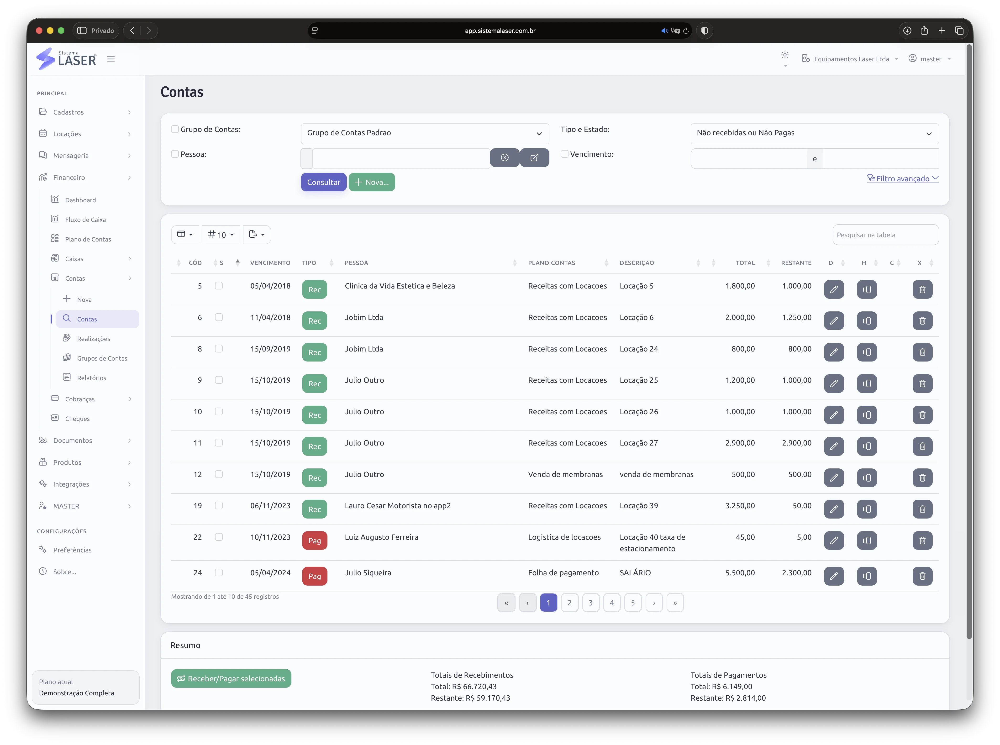
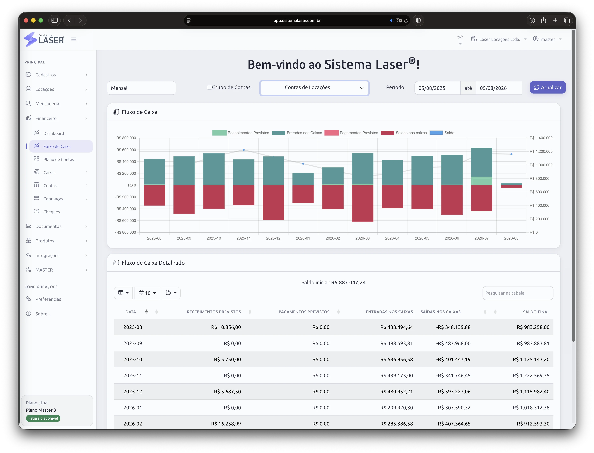

Locação
Valores e condições nascem vinculados ao cliente e ao equipamento.
Acompanhe contas, cobranças, bancos, caixas, cheques e previsões sem perder a ligação com clientes, equipamentos, contratos, parceiros e filiais.
O dashboard reúne saldos de caixas e contas bancárias, valores em aberto, resultados do período, comparação mensal e outros indicadores para uma leitura rápida da saúde financeira.
Crie caixas ou “caixinhas” para representar bancos, gavetas, dinheiro em espécie com motoristas e outros controles individuais. Assim, a visão consolidada não apaga o detalhe de cada origem de recursos.

O financeiro deixa de ser uma etapa isolada e passa a acompanhar toda a operação da locadora.
Valores e condições nascem vinculados ao cliente e ao equipamento.
Documentos e recibos preservam o que foi combinado.
Parcelas, vencimentos e meios de pagamento ficam organizados.
Custos, manutenção, estoque e logística entram na análise.
Comissões, parceiros, proprietários e filiais podem ser apurados.
Dashboard, fluxo de caixa e DRE apoiam decisões.
Registre recebimentos em dinheiro, cheque, boleto, PIX e cartão de crédito. Acompanhe parcelas, contas vencidas e valores ainda pendentes sem perder a origem da cobrança.
Nas contas a pagar, organize compromissos por vencimento, categoria, fornecedor e caixa. Cheques recebidos também podem ser usados em pagamentos, com acompanhamento de repasses e devoluções.

O fluxo de caixa coloca lado a lado os valores previstos a receber e a pagar para mostrar como o saldo pode evoluir nos próximos dias, semanas ou meses.
A projeção considera todos os caixas selecionados e ajuda a avaliar compromissos, necessidade de capital, melhor momento para investir e impacto de atrasos antes que eles cheguem ao caixa.

Com a integração Asaas disponível nos planos compatíveis, a equipe gera cobranças e acompanha pagamentos dentro do fluxo comercial e financeiro.
PIX, boletos, cartões, cobranças recorrentes e extrato integrado reduzem lançamentos repetidos e facilitam a conferência de quem pagou, do que foi pago e de qual locação originou o valor.

Organize contas bancárias, dinheiro em caixa, recursos com motoristas e outros pontos de movimentação financeira sem misturar responsabilidades.
Transferências, recebimentos e pagamentos alimentam o histórico de cada caixa. A gestão pode conferir movimentações em detalhe e, ao mesmo tempo, analisar o resultado consolidado da locadora.

A rastreabilidade melhora quando receita, custo e responsabilidade compartilham a mesma base.
Parcelas e cobranças permanecem associadas ao cliente, contrato e equipamento alugado.
Manutenção, reparos, produtos e consumíveis ajudam a revelar a rentabilidade real.
Comissões, repasses, proprietários e unidades podem ser analisados com contexto.
Dashboard, DRE e relatórios conectam o desempenho financeiro ao ritmo da operação.
Veja como os controles se adaptam aos recebimentos, pagamentos e responsabilidades da sua empresa.
Comparar planosNa demonstração, mostramos o fluxo de contas, caixas, cobranças e indicadores aplicado ao modelo da sua locadora.